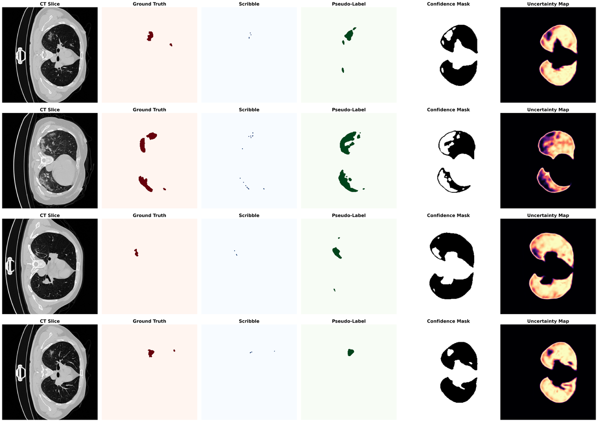
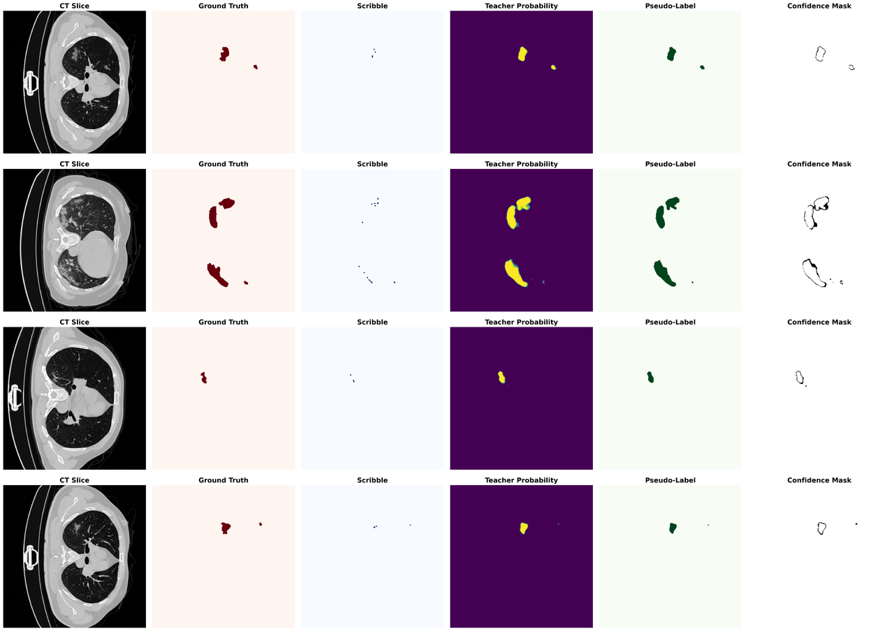
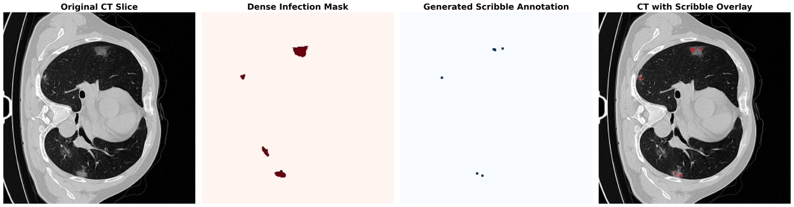
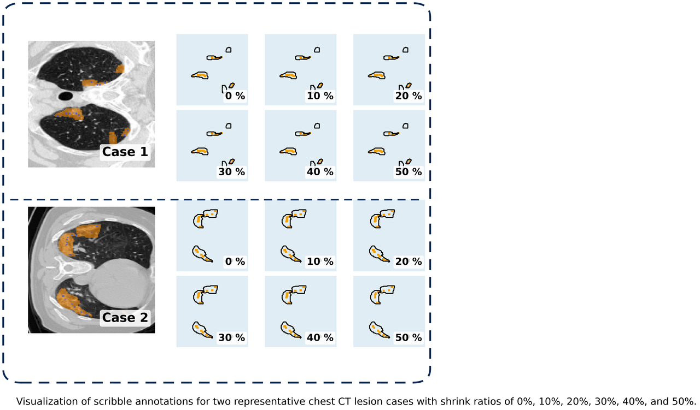
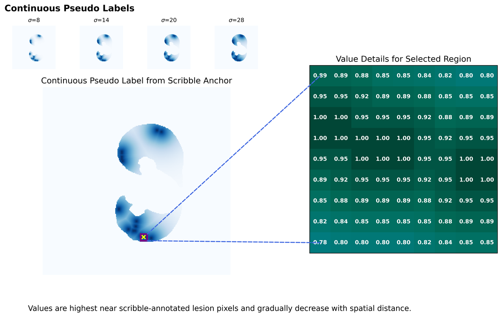
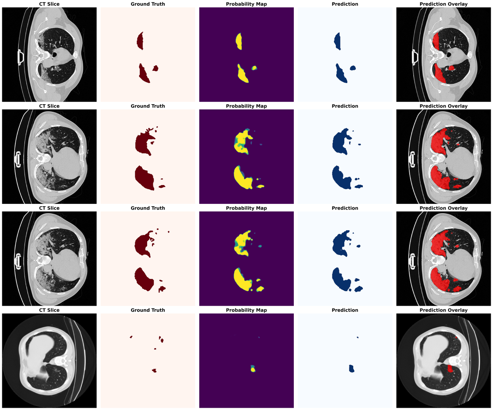
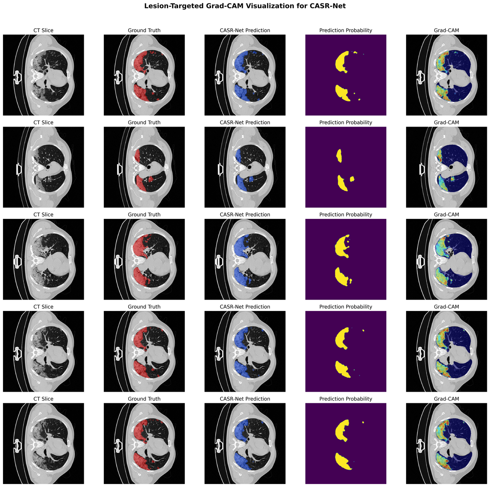
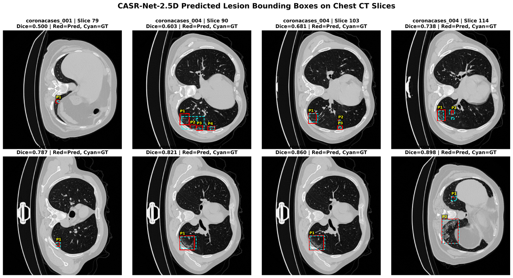

Submitted · IEEE Transactions on Medical Imaging (TMI)
CASR-Net.
Confidence-aware learning from sparse lesion scribbles.
The research
question.
How can confidence-aware refinement turn sparse scribble supervision into useful lung-lesion masks?
Abstract / research summary
CASR-Net investigates confidence-aware scribble refinement for lung-lesion segmentation in chest CT. Sparse foreground and background scribbles are combined with teacher probability maps to construct selective pseudo-labels. A student model then learns with confidence-weighted supervision and consistency. The reported experiments use scribbles generated from dense masks and a teacher trained with dense labels, so the work studies a weakly supervised student within a teacher-assisted pipeline.
Inside the
method.
- 01
Construct sparse supervision
Generate foreground and background scribbles from the available masks for controlled experiments.
- 02
Refine with confidence
Use teacher probabilities and confidence selection to build more reliable pseudo-labels.
- 03
Train the student
Combine sparse supervision with confidence-weighted consistency and evaluate lesion overlap.
What the
results show.
For Dataset 2, the repository reports Dice scores of 0.1387 for a foreground-scribble-only baseline, 0.5769 with foreground and background scribbles, and 0.7879 for CASR-Net. These comparisons examine the benefit of additional supervision and refinement within the reported setup.
| Evaluation | Dice | IoU |
|---|---|---|
| Dataset 1 validation | 0.8046 | 0.7165 |
| Dataset 2 validation | 0.7879 | 0.6501 |
Repository-reported validation results. Dataset names follow the repository. Dense labels are used to generate scribbles and train the teacher.
Research in view.
Explore the visual evidence behind CASR-Net, from sparse annotation and confidence-guided refinement to lesion predictions and model interpretation. Select any figure to enlarge it.
Confidence-guided refinement
Follow the relationship between CT appearance, sparse annotations, teacher predictions, and confidence-selected supervision.


View full figureConfidence and uncertainty, side by side
CT slices, reference masks, simulated scribbles, pseudo-labels, confidence masks, and uncertainty maps from the repository’s recorded experiments.
Source figure

View full figureFrom teacher probabilities to pseudo-labels
Selected CT examples trace the densely supervised teacher’s probability maps through pseudo-label construction and confidence selection.
Source figure View full figure
View full figure
The supervision pathway
A compact method illustration connects the input CT, reference mask, scribble supervision, teacher probabilities, pseudo-label, and confidence selection.
Sparse supervision, in detail
These visualizations explain how the experimental annotations are constructed from dense masks and how their spatial support changes.


View full figureSimulated scribble annotations
Examples of the repository’s scribble-generation procedure. The sparse marks are derived from the available dense reference masks.
Source figure

View full figureChanging the scribble extent
Two CT cases illustrate how the simulated scribble annotations change as shrink ratios increase from 0% to 50%.
Source figure

View full figureContinuous support around a scribble
A method visualization shows how spatial weights decay away from a scribble anchor, with alternative smoothing scales and a numerical close-up.
Source figurePredictions and interpretation
Inspect predicted masks, probability maps, feature-attribution views, and lesion localization across multiple CT slices.


View full figureLesion masks and probability maps
CT slices, reference masks, probability maps, predictions, and overlays from the repository’s TTA-based qualitative experiment.
Source figure

View full figureLesion-focused Grad-CAM
Five examples place the CT slice, reference overlay, prediction, probability map, and lesion-targeted Grad-CAM view together for qualitative inspection.
Source figure

View full figurePredicted lesion regions across slices
The repository’s 2.5D localization figure shows predicted lesion boxes in red and reference boxes in cyan. Dice values printed in the figure apply to the displayed slices.
Source figureFigures are drawn from the author’s recorded repository experiments and method illustrations. Dataset and checkpoint contexts vary; the gallery is not a matched multi-model benchmark. Read the experimental context ↗.
The complete
work.
CASR-Net: Confidence-Aware Teacher-Guided Scribble Refinement for Pulmonary Infection Segmentation in Chest CT
CASR-Net: Confidence-Aware Teacher-Guided Scribble Refinement for Pulmonary Infection Segmentation in Chest CT. Submitted manuscript.
Submitted to: IEEE Transactions on Medical Imaging (TMI).
Methods, validation metrics, and qualitative figures are summarized from the author’s public segmentation repository.